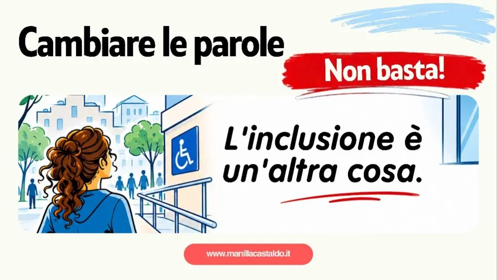

Cambiare le parole non basta. L'inclusione è ancora un'altra cosa

Il Senato ha approvato una modifica all'articolo 38 della Costituzione che prevede di sostituire il termine «minorati» con «persone con disabilità» e di riconoscere in modo più esplicito il diritto all'autonomia e alla partecipazione alla vita politica, economica e sociale. Un passaggio importante, senza dubbio. Ma io mi fermerei un momento prima di parlare di vittoria.
Le parole contano, ma non bastano
Non fraintendetemi, sono favorevole a un linguaggio rispettoso. Le parole hanno un peso e non è bello trovare ancora termini come «minorato» o «handicappato», soprattutto quando vengono utilizzati con l'intenzione di offendere, sminuire o prendere in giro qualcuno.
Ma davvero pensiamo che il problema sia soltanto trovare le parole giuste? Potremmo inventare milioni di termini per descrivere la disabilità, cambiarli ogni volta che diventano inappropriati e aggiornare continuamente il nostro vocabolario. Ma se non cambia il modo in cui le persone guardano alla disabilità, resteremmo sempre allo stesso punto.
Cosa succede fuori
Possiamo scrivere «persone con disabilità» nella Costituzione, ma poi cosa succede fuori? Succede che ancora oggi ci sono marciapiedi senza scivoli, ascensori che non funzionano, locali e strutture inaccessibili, servizi che non tengono conto delle diverse esigenze. Succede che per partecipare a una semplice attività, frequentare un luogo o organizzare un viaggio bisogna spesso affrontare ostacoli che per altri nemmeno esistono.
Le barriere mentali
E non ci sono soltanto le barriere fisiche. Ci sono quelle mentali, forse ancora più difficili da abbattere. Ci sono gli sguardi, i pregiudizi, le domande fuori luogo e quella continua tendenza a considerare una persona con disabilità come qualcuno da compatire, proteggere o ammirare. Come se non fosse semplicemente una persona con i propri desideri, le proprie capacità e il diritto di vivere la propria vita.
Proprio ieri, alla notizia, abbiamo fatto un post su HandiMap, perché è proprio ciò che stiamo cercando di abbattere: le barriere mentali. Se vuoi fare la tua parte, registrati su HandiMap.it: ogni segnalazione conta.
L'inclusione vera
Io credo che il cambiamento debba partire proprio da qui. Non basta insegnare alle persone quale parola utilizzare se poi continuiamo a escluderle nella vita quotidiana. Non basta parlare di inclusione durante le giornate dedicate alla disabilità, pubblicare qualche bella frase o celebrare una nuova legge. L'inclusione deve diventare una cosa normale, non un'eccezione da festeggiare.
Ecco perché considero questo provvedimento un passaggio importante, ma non una vittoria definitiva. Tra l'altro, il Senato ha espresso soltanto una prima deliberazione e il percorso parlamentare deve ancora proseguire.
La vera vittoria
La vera vittoria arriverà quando non dovremo più chiedere che un luogo sia accessibile, perché lo sarà già. Quando non dovremo spiegare continuamente che abbiamo gli stessi diritti degli altri. Quando la partecipazione alla vita sociale non sarà una concessione, ma una possibilità concreta.
Mi auguro che questa modifica non rimanga soltanto una bella pagina della nostra Costituzione, ma diventi l'inizio di un cambiamento molto più grande. Perché possiamo anche cambiare tutte le parole del mondo, ma se non cambiamo mentalità, continueremo a chiamare inclusione qualcosa che, nella realtà, inclusione non è.